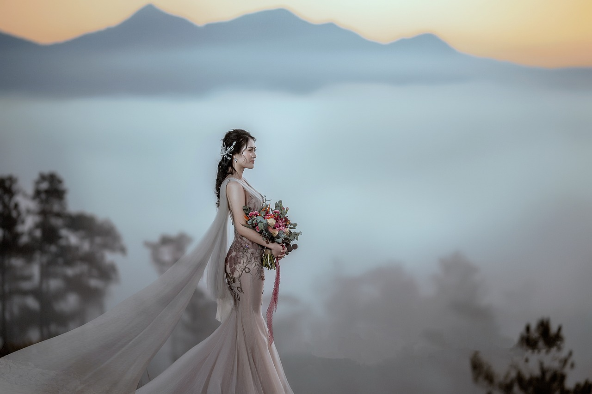
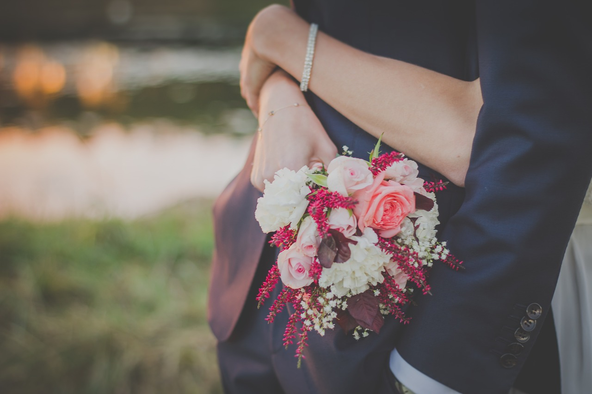

Essential Tips for a Stress-Free Wedding
Preparation
Planning a wedding can be a thrilling yet
overwhelming experience. To ensure that your
wedding day is as seamless as possible, it’s
important to start early. Begin your
planning process as early as possible and
set a timeline for each task, from booking
the venue to sending invitations. This will
allow you to manage your time effectively
and reduce stress as the wedding date
approaches. Establishing a budget is crucial
for a smooth planning process. Determine how
much you are willing to spend on each aspect
of the wedding, including venue, catering,
attire, and decor. This will help you
prioritize your expenses and avoid
overspending. Drafting a guest list early on
will help you estimate your budget and
select an appropriate venue size. Remember
to account for plus-ones and children, if
applicable. Once you have a preliminary
list, you can make adjustments as needed.
Take your time to research and interview
potential vendors. Read reviews, ask for
recommendations, and request quotes. This
will help you find professionals who align
with your vision and budget. Keeping
communication open between you and your
partner, as well as with family and vendors,
is essential. Schedule regular check-ins to
discuss progress, updates, and any concerns
that may arise. Utilizing tools such as
wedding planning apps, spreadsheets, or
binders to keep track of your to-do lists,
contracts, and important information is
vital for staying organized. By staying
organized, you can avoid last-minute chaos.
No matter how well you plan, unexpected
situations can occur. Preparing contingency
plans for bad weather or vendor
cancellations will give you peace of mind.
Amid the hustle and bustle of wedding
planning, don’t forget to take care of
yourself. Make time for relaxation,
exercise, and quality time with your
partner. This will help you maintain your
energy and enthusiasm throughout the
planning process. By following these tips,
you can streamline your wedding preparation,
making it a more enjoyable and stress-free
experience. Remember, the goal is to create
beautiful memories that you and your loved
ones will cherish for a lifetime.

Creative Themed Wedding Ideas to Reflect
Your Unique Love Story
Choosing a theme for your wedding can add a
personal touch and make your special day
even more memorable. A vintage glam theme
could be perfect for couples who adore
nostalgia and the elegance of bygone eras.
Incorporating antique furniture, lace, and
vintage tableware into the decor creates a
beautiful ambiance. Soft florals and classic
car rentals enhance the vintage vibe. For
those who appreciate the beauty of nature
and simplicity, a rustic chic theme is a
great choice. Hosting the wedding in a barn
or garden and using natural materials like
wood, burlap, and wildflowers can create a
warm and inviting atmosphere. Handmade signs
and mason jar centerpieces add personal
touches that guests will love. For couples
with a favorite travel destination or a
dream of a beach wedding, a
destination-themed wedding offers an
opportunity for a unique experience.
Decorate with elements inspired by the
chosen location, such as tropical flowers,
seashells, or travel-inspired centerpieces.
This theme not only creates a beautiful
backdrop but also allows guests to enjoy a
memorable adventure. Embracing an inner
prince or princess with a fairytale wedding
theme can transform the celebration into a
whimsical experience. Enchanted forest
elements like twinkling lights, whimsical
decor, and ethereal florals create a magical
atmosphere. A gown reminiscent of classic
fairy tales and a venue that feels like a
castle or a hidden garden complete the
theme. Drawing inspiration from the season
can also enhance the wedding experience. A
spring wedding might incorporate pastel
colors and blooming flowers, while a fall
wedding could feature rich hues and autumn
leaves. Tailoring the menu and decor to
reflect the flavors and beauty of the season
creates a cohesive feel. Couples can also
honor their heritage by incorporating
cultural elements into their wedding,
whether it’s traditional attire, customs, or
cuisine. Weaving cultural background into
the ceremony and reception creates a deeply
meaningful celebration. For those who share
a favorite book or film, designing the
wedding around that theme allows for
creative integration of beloved story
elements. From decor to vows, this theme can
immerse guests in a fictional world. Lastly,
a carnival or festival-themed wedding offers
a fun and vibrant celebration. Incorporating
colorful decor, games, and food stations
resembling a fair creates a lively
atmosphere that keeps guests entertained and
generates lasting memories. No matter which
theme is chosen, it’s important to ensure
that it reflects the couple’s personalities
and love story, making the wedding a unique
celebration to cherish for years to come.
Client Reviews About Our Useful tips
"I cannot thank the team enough for their invaluable wedding preparation tips! As a bride-to-be, I was initially overwhelmed by the planning process. Their advice on creating a budget, starting early, and staying organized helped me feel in control. They also recommended fantastic vendors and made the entire experience enjoyable. On our wedding day, everything went flawlessly, and I truly believe it was because of their expert guidance. I highly recommend their services to any couple!" – Lisa M.
"I loved the ideas they provided for our themed wedding! We wanted something unique that reflected our personalities, and their suggestions were incredible. We decided on a vintage glam theme, and they helped us with everything from decor to music. The attention to detail was impressive, and our guests were in awe of how beautifully everything was executed. It was truly the best day of our lives, and we couldn't have done it without their creative vision!" – Mark T.